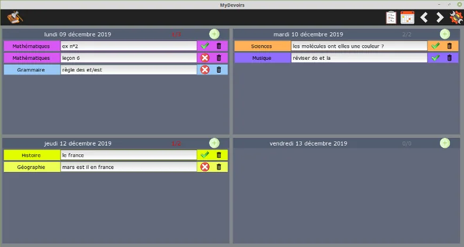
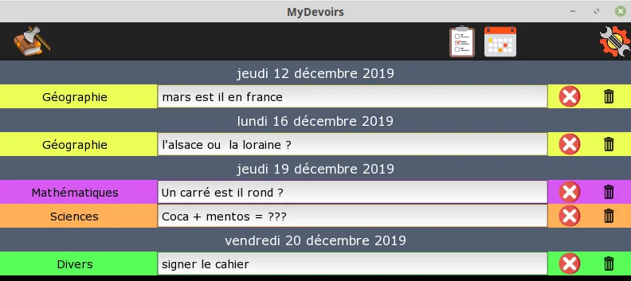
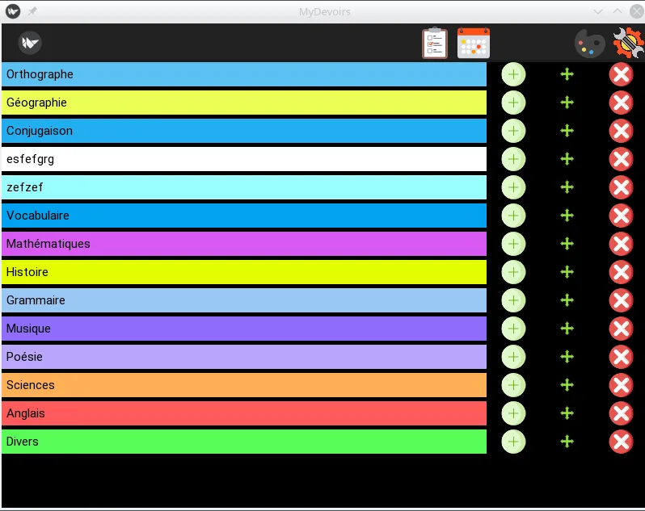

Gratuit · sans compte · sans Internet
Noter ses devoirs sur l’ordinateur, enfin simple
MyDevoirs est un agenda de devoirs pour les enfants qui travaillent sur ordinateur en classe. On ouvre le logiciel, on choisit une matière, on écrit : rien d’autre à remplir.
Repris et maintenuLe projet d’origine n’est plus maintenu. Cette version continue d’être corrigée et développée. En savoir plus.

Pourquoi ce logiciel
MyDevoirs est né d’un besoin concret : un enfant équipé d’un ordinateur en classe depuis le CM1, et aucun outil vraiment adapté. Rainlendar, OneNote, l’agenda de Windows… tous pensés pour des adultes. Celui-ci a été développé avec lui, selon ses besoins et ses exigences.
- Deux clics pour un devoir : on clique sur , on choisit la matière, et le curseur est déjà dans la zone de texte.
- Une couleur par matière, modifiable, pour repérer sa leçon de maths d’un coup d’œil.
- Tout au clavier : quatre raccourcis suffisent pour ajouter, dupliquer, changer de matière ou effacer.
- Rien en ligne : les devoirs sont enregistrés dans un simple fichier, sur l’ordinateur de l’enfant.
Les deux vues
MyDevoirs propose deux affichages complémentaires, et un bouton pour passer de l’un à l’autre. En pratique, l’agenda sert à recopier ce qui est écrit au tableau ; la liste des tâches sert le soir, à la maison.
La vue agenda
Chaque jour de la semaine avec tous ses devoirs, faits ou non. On change de semaine avec les flèches de la barre du haut (comment faire), et le numéro de semaine est affiché. Les jours visibles et le premier jour de la semaine se règlent dans les paramètres.
La liste des tâches
Uniquement ce qui reste à faire. Quand un devoir est coché, la ligne disparaît : il ne reste que le travail en attente, et l’écran se vide à mesure que l’enfant avance.

Prendre en main
Rien à régler pour commencer : on ouvre MyDevoirs et la semaine en cours est affichée. Voici les gestes de tous les jours, dans l’ordre où on les rencontre.
Noter un devoir
- Cliquez sur dans l’en-tête du jour concerné.
- Choisissez la matière dans la liste.
- Écrivez le devoir. Il est enregistré au fur et à mesure : il n’y a pas de bouton « Enregistrer ».
Cocher quand c’est fait
- À droite de chaque devoir, la croix rouge devient une coche verte d’un clic : le devoir est fait.
- Le compteur de l’en-tête du jour (« 1/3 ») montre ce qui est déjà fait.
- La poubelle supprime le devoir.
Changer de semaine
- Dans la barre du haut, les flèches et affichent la semaine précédente et la suivante.
- L’en-tête de l’agenda rappelle le numéro de la semaine, ses dates, et sa place par rapport à aujourd’hui (« cette semaine », « dans 2 semaines »).
- Dès qu’on s’éloigne de la semaine en cours, un bouton Aujourd’hui apparaît pour y revenir d’un clic.
- Pour aller plus loin d’un coup, tapez dans le champ de l’en-tête puis appuyez sur Entrée : un numéro de semaine (
12), une semaine d’une autre année (3/2027) ou une date (25/12/2026).
Le reste de la barre du haut
- et passent de l’agenda à la liste des tâches, et inversement.
- Un autre bouton ouvre l’écran des couleurs, pour ajouter des matières, les réordonner et choisir leur teinte.
- ouvre les paramètres : jours affichés, premier jour de la semaine, semaines A/B, police et thème.
Quatre raccourcis à retenir
Ils s’utilisent quand le curseur se trouve dans une zone de texte.
- Ctrl N Nouveau devoirLa liste des matières s’affiche : on choisit avec les flèches, on valide avec Entrée.
- Ctrl D Dupliquer la matièreUne nouvelle ligne dans la même matière, pour enchaîner « leçon » puis « exercices ».
- Ctrl M Changer de matièreOn se déplace avec les flèches, on valide avec Entrée ou la flèche droite.
- Ctrl E Effacer la ligneSupprime le devoir en cours d’édition.
Pour les enfants dys
Les enfants qui ont besoin d’un ordinateur en classe sont souvent des enfants dys. L’affichage est donc réglable, pour s’approcher de ce qui se lit le mieux, enfant par enfant.
- La police OpenDyslexic, dessinée pour limiter les confusions entre les lettres.
- Un thème contrasté, pour renforcer la lisibilité à l’écran.
- Des matières sur mesure : en ajouter, les réordonner par glisser-déposer, en supprimer, et choisir la couleur de chacune par un clic droit.
- Des jours choisis : on n’affiche que les jours utiles, pour alléger l’écran.

Installer MyDevoirs
Choisissez le fichier qui correspond à votre système : le téléchargement de la dernière version démarre aussitôt.
Windows
Un fichier .msi, l’installateur habituel de Windows.
- Téléchargez le fichier
MyDevoirs-Windows.msi. - Double-cliquez dessus et laissez l’installation se faire.
- Un raccourci MyDevoirs apparaît dans le menu Démarrer.
Linux
Un fichier .AppImage, qui fonctionne sur toutes les distributions.
- Téléchargez le fichier
MyDevoirs-Linux.AppImage. - Rendez-le exécutable :
chmod +x MyDevoirs-Linux.AppImage, ou par clic droit, Propriétés, Permissions, « Autoriser l’exécution du fichier comme un programme ». - Double-cliquez : il n’y a rien à installer.
Windows affiche un avertissement ? MyDevoirs est un logiciel récent et son installateur n’est pas encore signé : Windows ou Edge peut donc le présenter comme « peu téléchargé » ou « d’un éditeur inconnu ». Cela signifie seulement que Windows ne connaît pas encore ce fichier. Dans Edge, ouvrez le menu … du téléchargement, puis choisissez « Conserver », « Afficher plus » et « Conserver quand même ». Au lancement de l’installateur, cliquez sur « Plus d’infos » puis sur « Exécuter quand même ». Le code source est public sur GitHub.
Les anciennes versions et le code source sont sur la page des versions.
Vos données
Aucun compte, aucune publicité, aucun suivi, et aucun besoin d’Internet pour s’en servir. Les devoirs sont enregistrés dans un seul fichier de base de données, sur l’ordinateur : rien n’est envoyé vers un serveur. L’emplacement de ce fichier est affiché dans les paramètres, et il suffit de le copier pour sauvegarder les devoirs. Le détail est dans la déclaration de confidentialité.
Il est possible de placer ce fichier dans un dossier synchronisé (Dropbox, Seafile, Box, SugarSync…) pour retrouver les devoirs sur un second ordinateur. Les précautions à prendre sont décrites plus bas.
Un problème, une idée, une question
Les retours passent par les « issues » du dépôt GitHub. Trois formulaires posent les bonnes questions à votre place : il n’y a rien de technique à savoir, seulement un compte GitHub gratuit à créer.
La page des issues est publique. N’y mettez aucune information personnelle : ni nom, ni prénom, ni école, ni adresse électronique, et rien qui permette d’identifier un enfant.
Questions fréquentes
MyDevoirs est-il vraiment gratuit ?
Oui. MyDevoirs est un logiciel libre sous licence LGPLv3 : il est gratuit, son code source est public, et personne ne revend vos données, puisqu’il n’en collecte aucune.
Peut-on synchroniser plusieurs ordinateurs ?
Oui, en plaçant le fichier de base de données dans un dossier synchronisé par un service tiers (Dropbox, Seafile, Box, SugarSync…). Dans les paramètres, on clique sur le chemin actuel, puis on choisit le dossier synchronisé et un nom de fichier. MyDevoirs propose alors de recopier la base existante dans ce nouveau fichier, puis redémarre.
Important : cette méthode synchronise et sauvegarde la base de données, mais ne permet pas de travailler à deux en même temps. Pour un même fichier synchronisé, n’ouvrez MyDevoirs que sur une seule machine à la fois, sous peine de perdre des données.
Comment sauvegarder les devoirs ?
En copiant le fichier de base de données, dont le chemin est affiché dans les paramètres. Ce seul fichier contient tous les devoirs, les matières et les couleurs.
Mon enfant n’est pas dys, est-ce quand même utile ?
Bien sûr. MyDevoirs a été pensé pour des enfants dys parce que ce sont eux qui, le plus souvent, écrivent sur ordinateur en classe. Mais rien n’y est réservé : tout enfant qui doit noter ses devoirs sur un ordinateur peut s’en servir tel quel.
Quelle est l’histoire de ce projet ?
Et une version Mac, Android ou iPhone ?
Pour l’instant, seules les versions Windows et Linux sont publiées. Le code repose sur Kivy, qui ouvre la voie à d’autres systèmes, mais aucune autre version n’est distribuée à ce jour.